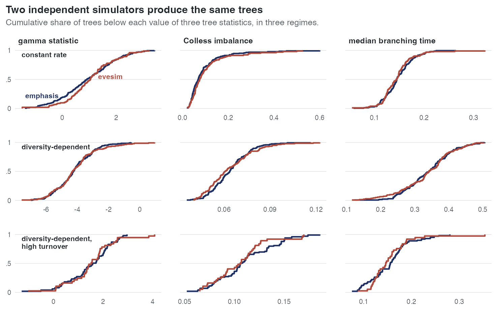

E14 — Do the package's simulator and evesim produce the same trees?
| Status | complete, with E14b (the rerun under matched conditioning); E44 supplies the ED simulator check this page cites without data |
| Package build | E14 library cur, installed at 373eec1 on 2026-09-24; the build audit puts that host's libraries at 373eec1 … f0dff93, identical to clean builds; E14b library e18, in the build audit's range 373eec1 … f0dff93 |
| Driver / analysis | sim/E14-simcheck.R (the version in the repository is E14b's, with max_tries = 0); figures sim/figures-study.R, sim/figures-e11e14.R |
| Data | results/E14/simcheck.csv (681 rows), results/E14b/simcheck.csv (556 rows); completed trees only |
Question
E11 fits this package's estimator to trees simulated by evesim (Qin, Valente & Etienne 2025). That tests the estimator only if the two simulators agree; otherwise a disagreement could be the estimator, their simulator or the different metrics, with no way to separate them. E14 is a gate on E11 and ran first. At \(\beta\)\(\Phi\) = \(\gamma\)\(\Phi\) = 0 their rate reduces to \(\lambda\) = max(\(\lambda\)0 + \(\beta\)N N, 0), \(\mu\) = \(\mu\)0 + \(\gamma\)N N, which is this package's dd on the linear link, so the two must agree in distribution with no metric correspondence needed.
Design
| arm | rates (\(\lambda\)0, \(\mu\)0, \(\beta\)N, \(\gamma\)N) | design's intent |
|---|---|---|
cr (no diversity dependence) |
0.35, 0.10, 0, 0 | against theory: expected extant lineages 2e^{(\(\lambda\)-\(\mu\))T}, and against each other |
dd (diversity dependent) |
0.60, 0.10, -0.004, 0 | against each other, no closed form |
dd + high turnover |
0.80, 0.40, -0.006, 0 | against each other where hidden lineages exist; the design also named incomplete sampling, the driver runs \(\rho\) = 1 |
| parameter | value |
|---|---|
| crown age | 15, two starting lineages in both simulators |
| draws | 200 per arm per simulator; the CSVs hold the completed trees (37 to 181 per arm and simulator) |
| statistics per tree | extant tips, complete tips, \(\gamma\) statistic, normalised Colless imbalance, crown-normalised median branching time |
| conditioning | E14: package default max_tries; E14b: max_tries = 0 in simulate_tree and retry = 1 in evesim::edd_sim, one draw each, both discarding a run in which a crown lineage dies out |
Pre-set rule
Per statistic, a two-sample Kolmogorov-Smirnov test at the 1% level, Bonferroni-corrected across the five statistics (0.002); medians reported beside the p-values; a rejection with a negligible median difference is read as a convention difference to be named, not a defect. If the simulators disagree beyond that, E11 is reported as uninterpretable.
Results
KS p-values (medians emphasis vs evesim; recomputed in ledger A):
| arm | statistic | E14 | E14b |
|---|---|---|---|
cr |
tips | 102 vs 85.5, p 0.32 | 106.5 vs 85.5, p 0.34 |
cr |
\(\gamma\) | 0.92 vs 1.04, p 0.36 | 0.90 vs 1.04, p 0.30 |
cr |
Colless | 0.070 vs 0.076, p 0.40 | 0.067 vs 0.076, p 0.145 |
dd |
tips | 119 vs 121, p 0.185 | 120 vs 121, p 0.62 |
dd |
Colless | 0.064 vs 0.061, p 0.172 | 0.064 vs 0.061, p 0.23 |
dd + high turnover |
tips | 62 vs 62, p 0.67 | 61 vs 62, p 0.79 |
dd + high turnover |
median branching time | 0.156 vs 0.146, p 0.275 | 0.158 vs 0.146, p 0.43 |
All 30 comparisons (15 per run) have p above 0.14; the smallest is 0.172 in E14 and 0.145 in E14b, against 0.002. The remaining rows (complete tips, \(\gamma\) and branching time on dd, and so on) are in ledger A §1, all with p ≥ 0.19.
Completion rates. In E14 the package completed 157, 181 and 63 of 200 runs per arm against evesim's 104, 139 and 37: the completed trees agreed in distribution but the two discarded different shares of runs, which the adversarial review listed as an open item.

emphasis (dark) and evesim (red) for one statistic in one arm. The curves cross and track each other in every panel; no KS test rejects.E14b — matched conditioning
The cause of the completion mismatch: simulate_tree counts max_tries as attempts after the first, so its default of 1 draws twice and completes 1 - (1 - 0.52)\(^{2}\) = 0.77 of constant-rate runs where one draw completes 0.52, the closed-form probability that both crown lineages leave descendants. E14b reran the three arms with one draw on each side. Completion rates then match: 108 against 104, 132 against 139, 36 against 37 of 200; on the constant-rate arm both sit near 0.52. All fifteen KS comparisons again have p above 0.002 (smallest 0.145, Colless under cr).
Conclusion
The rule is met in both runs: no rejection in 30 comparisons, and after matching the conditioning (E14b) the completion rates agree too. E11 is therefore interpretable as a test of the estimator. Limits: the check covers cr and dd only, the models the two simulators share, at complete sampling; it says nothing about either simulator's ED models. For those the methods text records a separate internal check (frozen-rate against thinning draws under ned, KS p 0.28 to 0.93; under ed alone at E24's effect the frozen-rate draw gives clades 30% larger), whose data were not located under results/. E44 supplies such a check with data: an independent R simulator of the raw-ED process agrees with simulate_tree() (KS p 0.14-1 on 17 of 18 comparisons over 400 clades a cell). The finding about max_tries is a property of the package's simulator: a comparison of completion rates with it has to set max_tries = 0.